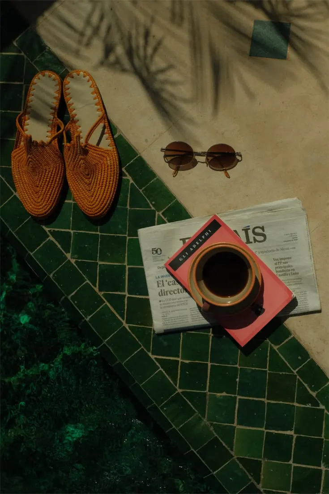
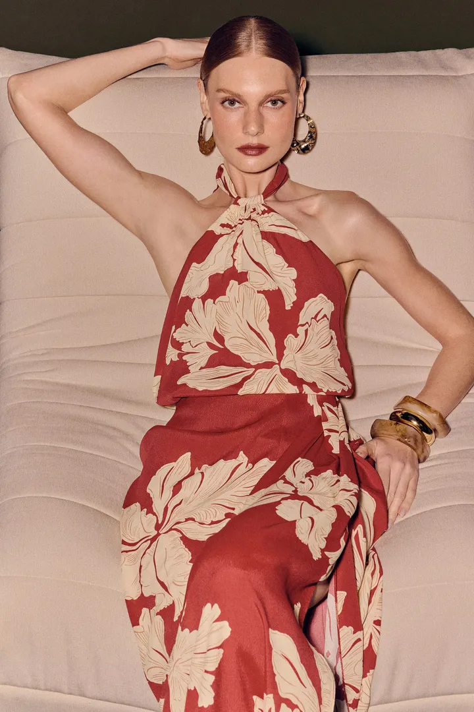
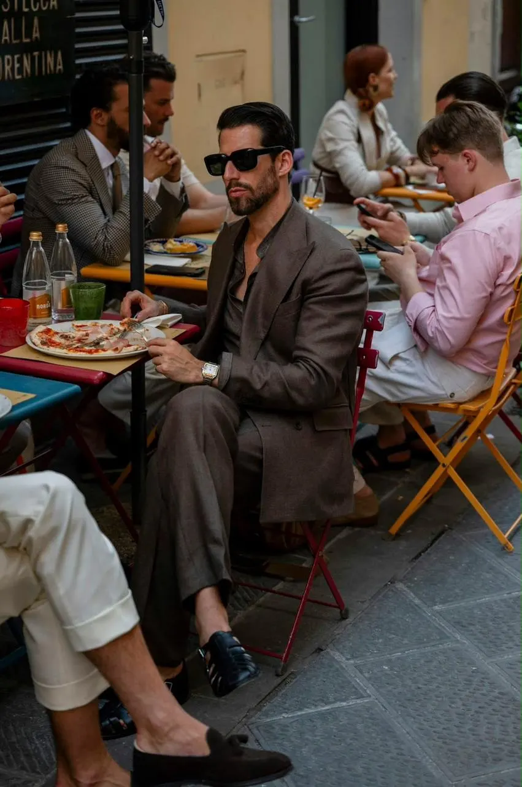
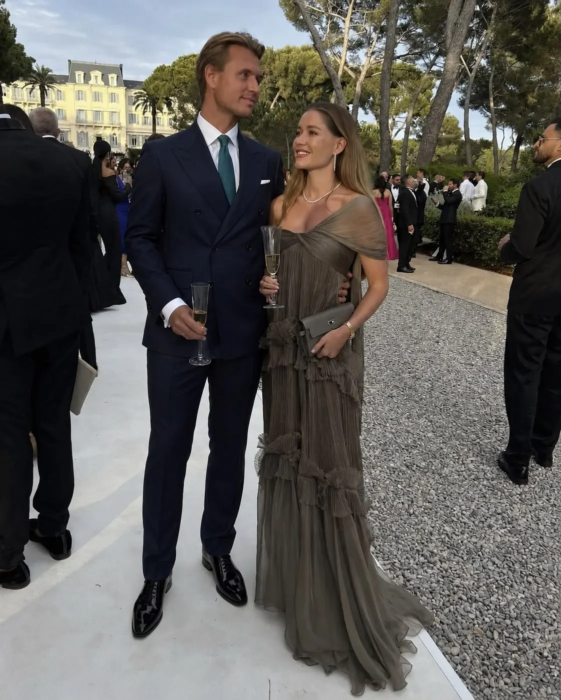
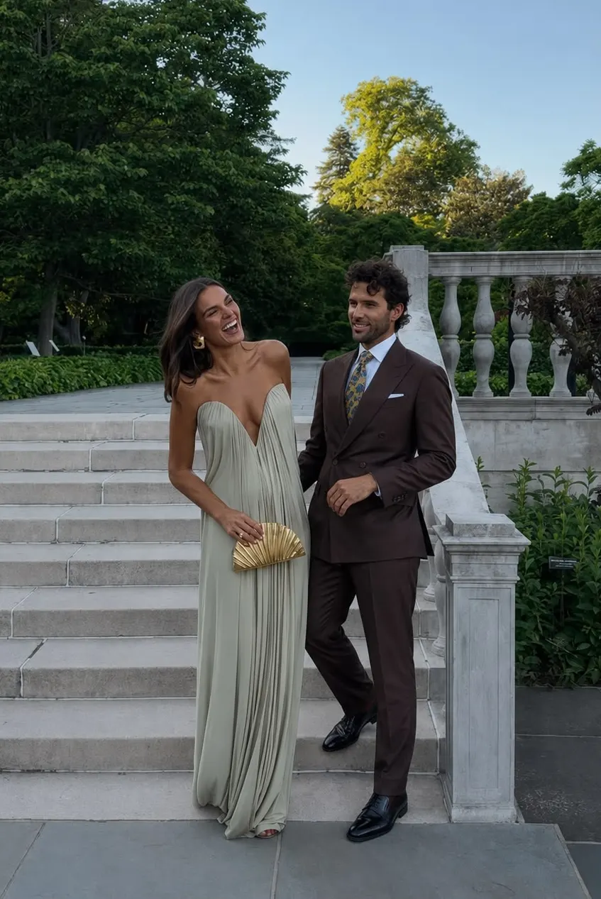

05.
Attire
What to wear for the weekend.
Copán is relaxed, warm and made for walking. Pack for warm days, cooler evenings and cobblestone streets. Light layers and comfortable shoes will come in handy throughout the weekend.
I. Welcome Party


Dress Code: Colorful Cocktail
Women: Fun cocktail dresses with colorful prints and tones. No white.
Men: Go for linen blazers or lightweight jackets.
II. Ceremony & Reception


Dress code: Formal Attire
Women: Formal long gowns. No white.
Men: Suits or blazers with dress pants.
Please Avoid White, ivory, cream, denim, casual sandals, beachwear.